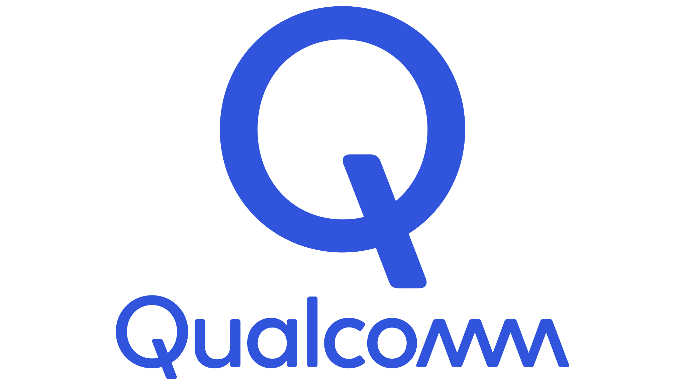
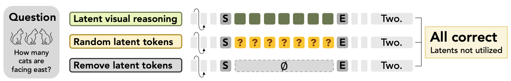
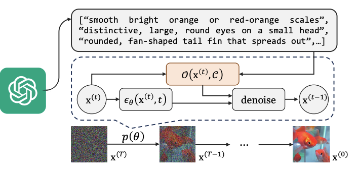
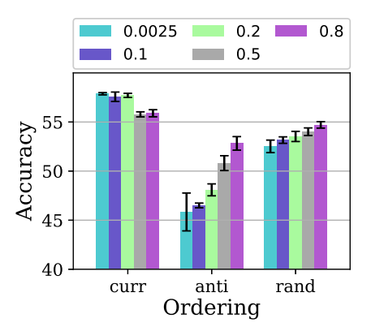
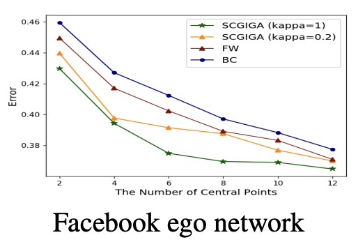

Meta Pre-Training with Augmentations to Generalize Neural Network Processing for Domain Adaptation
U.S. Patent, 2025 · Developed with Qualcomm AI Research
Saeed Vahidian, M. Bhat, D. Das, S. Steve Han, and F. Murat Porikli

Generative and Multimodal Intelligence
Assistant Professor, School of Electrical and Computer Engineering, Oklahoma State University
I am currently a tenure-track assistant professor in the School of Electrical and Computer Engineering at Oklahoma State University. Before joining OSU, I completed my postdoctoral research at Duke University, where I worked with Prof. Yiran Chen, Director of the NSF AI Institute for Edge Computing (Athena).
I received my Ph.D. in Electrical and Computer Engineering from the University of California San Diego under the supervision of Prof. Bill Lin.
My research lies at the intersection of multimodal learning, large language models (LLMs), generative AI, agentic AI, synthetic data, and robust learning. I develop reliable and efficient learning systems that connect foundational AI research with real-world applications.
Openings: I am recruiting two fully funded Ph.D. students to work on multimodal learning, LLMs, generative AI, and agentic AI. If you are interested, please email me at saeed.vahidian@okstate.edu with your CV and academic transcripts.
Openings: Two fully funded Ph.D. positions are available in multimodal learning, large language models (LLMs), generative AI, and agentic AI. Learn more.
Multimodal foundation models that generate and learn from text, images, video, and audio, with an emphasis on interpretable reasoning and compute-efficient deployment.
Developing efficient and reliable foundation models, controllable generative systems, multimodal synthetic-data pipelines, and methods that improve how large models learn and adapt.
Designing AI agents that reason, plan, use tools, collaborate, and learn from feedback while remaining dependable, interpretable, and aligned with their intended objectives.
Studying robust optimization, dataset distillation, synthetic data, federated learning, and efficient inference under limited data, compute, communication, and privacy budgets.

U.S. Patent, 2025 · Developed with Qualcomm AI Research
Saeed Vahidian, M. Bhat, D. Das, S. Steve Han, and F. Murat Porikli





Journal of Machine Learning Research, 2025




AAAI 2023

IEEE Transactions on Artificial Intelligence, 2023

IEEE Open Journal of the Computer Society, 2023


IEEE ICDCS Workshops, 2021


CVPR 2020

Electrical and Computer Engineering, Oklahoma State University — Fall 2026.
University of California San Diego — Spring 2022. Instructor: Prof. Bill Lin.
Ph.D. Openings
I am seeking highly motivated students interested in:
Prospective students should have a strong background or demonstrated research interest in machine learning, deep learning, computer vision, natural language processing, or a related field. Strong programming and mathematical skills are expected; experience with Python and PyTorch is highly desirable.
If you are interested in working with my group, please send me a short introductory email with your CV and academic transcripts. You may also include links to relevant publications or projects.
Contact me about joining the group